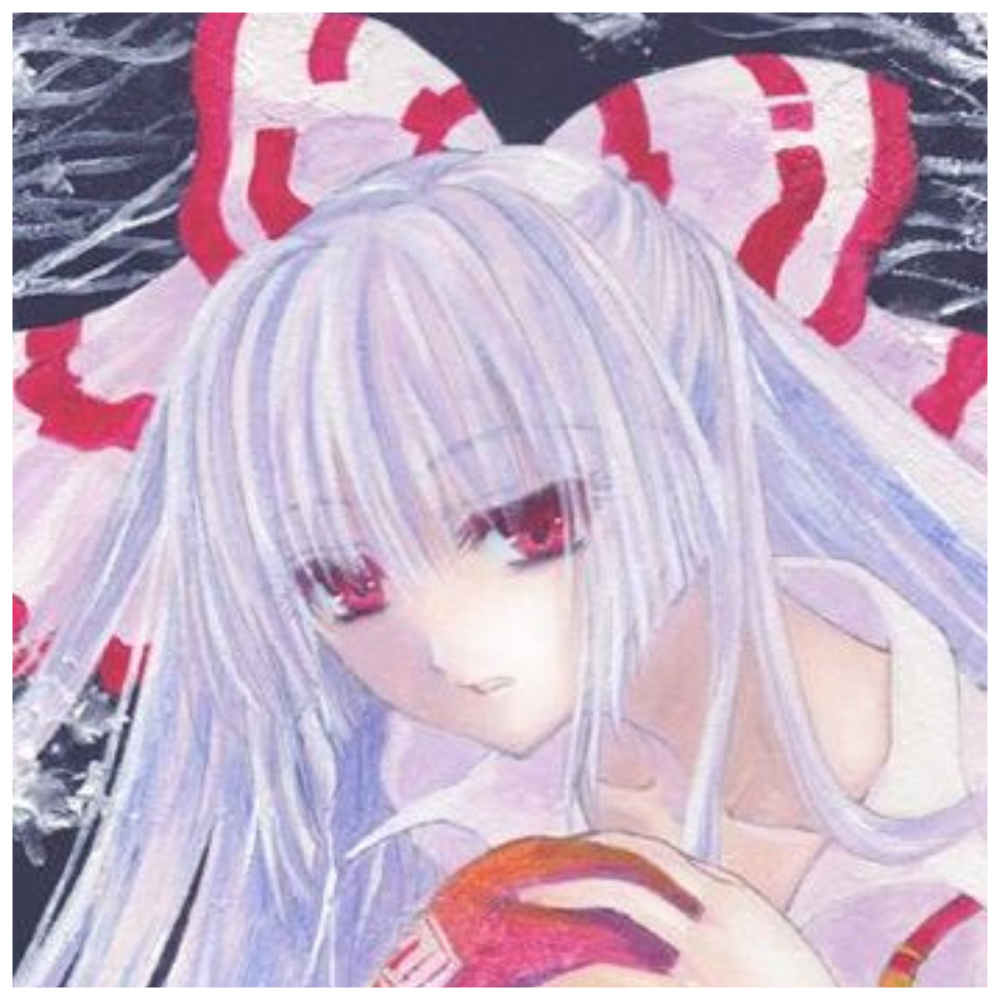

Maddy | Bem-Vindo!(a)
Esse site é um centro com projetos feitos por mim, Mad!
Aqui você verá: Meus projetos, Gostos meus e talvez coisas novas (futuramente)
Eu espero que goste do site e que ele não quebre aleatoriamente-
- Meus Gostos Pessoais! -
-
- Gêneros Favoritos de Jogos: Eu amo jogos Metroidvanias, Soulslikes, Sobrevivência, e de Ritmo. -
-
- Gêneros Musicais Favoritos: Eu amo Metal Sinfônico,Nu-Metal e também Vocaloid, que é incrível! -
-
- Animes Favoritos: Eu tenho muitos: Bungo Stray Dogs, Frieren -
-
- Touhou Project: (É uma franquia japonesa que possui>) Jogos, Séries, Mangás, entre outros! -
-
- Hollow Knight: É um Metroidvania com uma gameplay incrível, simplesmente meu xodô. -
-
- Terraria: Um jogo de sobrevivência que dá de re-jogar MUITAS vezes pela quantia de conteúdo. -
- Projetos Escolares de HTML -
-
- Meus Gostos (V1) | Essa é o meu primeiro projeto feito em HTML, digamos que ele é... Rústico. -
-
- Página de Receitas | Como o nome diz, é uma página de receitas, nadica de especial... Prometo! -
-
- Formulário-01 | É a primeira versão do Formulário que eu fiz!, também, não é funcional! -
-
- Formulário-02 | Esse é... bem, um Formulário que eu fiz, não é nadinha funcional também!-
-
- Onebit-Mad | Esse é o primeiro projeto que eu gostei do resultado, ele é bem fofo! -